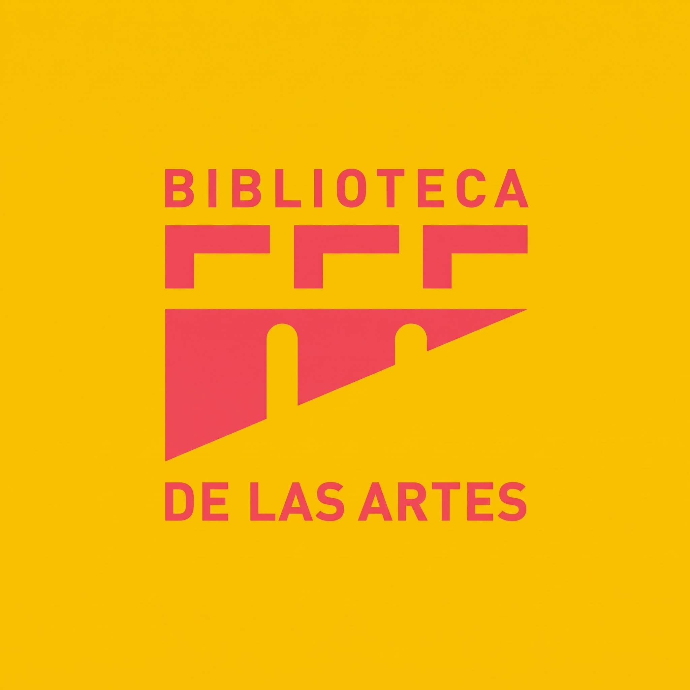

Biblioteca de las Artes
Espacio vivo de cultura, lectura y participación ciudadana para nuestra comunidad.


Infraestructura diseñada para la investigación artística y el encuentro comunitario.
Contamos con salas de lectura general, estantería abierta, mediateca y áreas de estudio colaborativo. La biblioteca facilita el acceso libre a fuentes biblio-hemerográficas especializadas en artes visuales, música, cine y literatura.
Además, promovemos actividades de vinculación con la sociedad mediante talleres infantiles, clubes de lectura y exposiciones temporales abiertas a todo el público.

Formación continua e intercambio cultural para todas las edades.
Participa en nuestros programas mensuales que incluyen laboratorios de escritura creativa, talleres de encuadernación, proyecciones cinematográficas y conversatorios con artistas locales e internacionales.
Tu opinión es fundamental para mejorar nuestros servicios culturales y espacios de lectura.